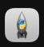
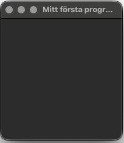
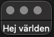
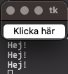
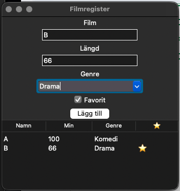

Programmering nivå 1 med Python
Kapitel 12: Användargränssnitt
I detta kapitel går du från textbaserade gränssnitt till grafiska program i Tkinter och bygger kompletta små GUI-appar.
Innehållsförteckning
Klicka på ett avsnitt för att hoppa direkt.
12.1 Program och användare
Ett program används nästan alltid av en användare. Därför är det viktigt att programmet kan kommunicera tydligt med den som använder det.
Detta kallas användargränssnitt.
Ett användargränssnitt är det som användaren ser och interagerar med.
Olika typer av användargränssnitt
Det finns flera typer av gränssnitt:
- kommandorad
- grafiska gränssnitt
- webbgränssnitt
I denna kurs börjar vi med kommandorad, där användaren skriver in text.
Exempel
name = input("Vad heter du? ")
print(f"Hej {name}")Här sker en enkel kommunikation:
- programmet frågar
- användaren svarar
- programmet ger ett resultat
Vad är ett bra användargränssnitt
Ett bra användargränssnitt är
- tydligt
- enkelt att förstå
- lätt att använda
Exempel på tydligt program
name = input("Skriv ditt namn: ")
age = int(input("Skriv din ålder: "))
print(f"Hej {name}")
print(f"Du är {age} år gammal")Exempel på otydligt program
n = input("x: ")
a = int(input("y: "))
print(n)
print(a)Det är svårt att förstå vad programmet vill.
Tänk på
- Skriv tydliga frågor
- Skriv tydliga svar
- Ge instruktioner till användaren
Sammanfattning
Program och användare kommunicerar genom gränssnittet. Ett bra gränssnitt gör programmet enklare att använda.
12.2 Textbaserade menyer
En vanlig typ av användargränssnitt är textbaserade menyer.
En meny låter användaren välja mellan olika alternativ i ett program.
Det gör programmet mer strukturerat och lättare att använda.
Exempel på meny
print("1. Hälsa")
print("2. Räkna")
print("3. Avsluta")
choice = input("Välj ett alternativ: ")Använda val med if
if choice == "1":
print("Hej!")
elif choice == "2":
number = int(input("Skriv ett tal: "))
print(number * 2)
elif choice == "3":
print("Programmet avslutas")
else:
print("Ogiltigt val")Göra menyn återkommande
Ofta vill man att menyn ska visas flera gånger. Det kan göras med en loop.
while True:
print("1. Hälsa")
print("2. Räkna")
print("3. Avsluta")
choice = input("Välj ett alternativ: ")
if choice == "1":
print("Hej!")
elif choice == "2":
number = int(input("Skriv ett tal: "))
print(number * 2)
elif choice == "3":
print("Programmet avslutas")
break
else:
print("Ogiltigt val")Varför använda menyer
Menyer gör att
- användaren vet vad som går att göra
- programmet blir tydligare
- det blir enklare att använda flera funktioner
Tänk på
- Ge tydliga alternativ
- Hantera felaktiga val
- Använd loop så att programmet fortsätter
Övning
Skapa en meny med följande alternativ:
- Skriv ut ditt namn
- Räkna ut ett tal gånger 3
- Avsluta programmet
Programmet ska fortsätta tills användaren väljer att avsluta.
12.3 Introduktion till Tkinter
Hittills har du arbetat med textbaserade program i terminalen. Men många program använder istället grafiska användargränssnitt.
I Python kan man skapa enkla grafiska program med biblioteket Tkinter.
Tkinter följer oftast med Python och används för att skapa fönster, knappar och text.
Vad är Tkinter
Tkinter är ett bibliotek i Python som används för att skapa grafiska program.
Med Tkinter kan man till exempel skapa
- fönster
- text
- knappar
- inmatningsfält
Skapa ett enkelt fönster
Först måste man importera Tkinter.
import tkinter as tkSedan kan man skapa ett fönster.
window = tk.Tk()
window.title("Mitt första program")Till sist måste programmet hållas igång.
window.mainloop()Detta program öppnar ett enkelt fönster med titeln Mitt första program.
Exempel: hela programmet
import tkinter as tk
window = tk.Tk()
window.title("Mitt första program")
window.mainloop()Ett fönster som nedan dyker upp på din skärm och denna ikonen kommer upp i ditt appfält

Troligen läggs fönstret längst upp till vänster på din skärm.

Lägga till text
import tkinter as tk
window = tk.Tk()
window.title("Exempel")
label = tk.Label(window, text="Hej världen")
label.pack()
window.mainloop()

Lägga till en knapp
import tkinter as tk
def say_hello():
print("Hej!")
window = tk.Tk()
button = tk.Button(window, text="Klicka här", command=say_hello)
button.pack()
window.mainloop()När användaren klickar på knappen körs funktionen. Titta i terminalen när du klickar på knappen.

Viktiga delar
import tkinter as tkimporterar bibliotekettk.Tk()skapar fönstretLabelvisar textButtonskapar en knapppack()placerar objekt i fönstretmainloop()håller fönstret öppet
Sammanfattning
Tkinter gör det möjligt att skapa enkla grafiska program i Python.
Det är ett första steg från textbaserade program till program med grafiskt användargränssnitt.
Övning
Skapa ett program med Tkinter som
- visar ett fönster
- har titeln Mitt GUI-program
- innehåller en knapp
- skriver ut Hej i terminalen när användaren klickar på knappen
12.4 Tkinter input och uppdatera text
I detta avsnitt bygger vi vidare på Tkinter och skapar mer användbara program.
Nu ska vi inte bara visa text och knappar, utan även låta användaren skriva in data och få ett resultat i fönstret.
Ta emot input i GUI
För att användaren ska kunna skriva något i programmet använder vi Entry.
import tkinter as tk
window = tk.Tk()
window.title("Input exempel")
entry = tk.Entry(window)
entry.pack()
window.mainloop()Här kan användaren skriva text i ett fält.
Hämta värdet från inputfältet
För att använda det som användaren skriver använder vi .get().
import tkinter as tk
def show_text():
text = entry.get()
print(text)
window = tk.Tk()
entry = tk.Entry(window)
entry.pack()
button = tk.Button(window, text="Visa text", command=show_text)
button.pack()
window.mainloop()Uppdatera text i fönstret
Istället för att skriva ut i terminalen kan vi visa resultat direkt i GUI.
import tkinter as tk
def greet():
name = entry.get()
label.config(text=f"Hej {name}")
window = tk.Tk()
window.title("GUI-program")
entry = tk.Entry(window)
entry.pack()
button = tk.Button(window, text="Säg hej", command=greet)
button.pack()
label = tk.Label(window, text="")
label.pack()
window.mainloop()Sammanfattning
I detta avsnitt har du lärt dig att
- använda inputfält (Entry)
- hämta värden från användaren
- uppdatera text i GUI
- koppla knappar till funktioner
Detta gör att du kan skapa riktiga program med användarinteraktion.
Övningar
- Skapa ett program där användaren skriver sitt namn och får en hälsning i fönstret.
- Skapa ett program där användaren skriver ett tal och programmet visar talet gånger 2.
- Utmaning: skapa ett program där användaren skriver sin ålder och programmet visar hur gammal personen är om 5 år.
12.5 Tkinter input och output, widgets, ändra utseende
I detta avsnitt bygger vi vidare på Tkinter och lär oss fler funktioner så att vi kan skapa mer avancerade grafiska program.
Input och output i GUI
Du har redan sett hur man använder Entry och Label. Detta är grunden i
nästan alla GUI-program.
import tkinter as tk
def greet():
name = entry.get()
label.config(text=f"Hej {name}")
window = tk.Tk()
entry = tk.Entry(window)
entry.pack()
button = tk.Button(window, text="Säg hej", command=greet)
button.pack()
label = tk.Label(window, text="")
label.pack()
window.mainloop()Flera widgets i samma program
import tkinter as tk
def double():
value = int(entry.get())
label.config(text=f"{value * 2}")
def triple():
value = int(entry.get())
label.config(text=f"{value * 3}")
window = tk.Tk()
entry = tk.Entry(window)
entry.pack()
btn1 = tk.Button(window, text="x2", command=double)
btn1.pack()
btn2 = tk.Button(window, text="x3", command=triple)
btn2.pack()
label = tk.Label(window, text="")
label.pack()
window.mainloop()Ändra utseende
label = tk.Label(window, text="Hej", fg="blue", font=("Arial", 16))
label.pack()Rensa inputfält
def clear():
entry.delete(0, tk.END)
button = tk.Button(window, text="Rensa", command=clear)
button.pack()Kontrollera input (enkel validering)
def calculate():
try:
value = int(entry.get())
label.config(text=f"{value * 2}")
except:
label.config(text="Skriv ett tal")Placering med grid istället för pack
pack() staplar saker. grid() ger mer kontroll.
entry = tk.Entry(window)
entry.grid(row=0, column=0)
button = tk.Button(window, text="OK")
button.grid(row=0, column=1)Sammanfattning
Nu kan du
- skapa flera knappar
- hantera input och output
- ändra utseende
- hantera fel
- placera element mer exakt
Detta räcker för att skapa riktiga små applikationer.
Övningar
- Skapa ett program med två knappar: en som dubblar ett tal och en som tredubblar ett tal.
- Skapa ett program som tar emot ett tal, visar resultatet gånger 5 och hanterar felaktig input.
12.6 Kompletta GUI-program med widgets
I detta avsnitt ska vi använda Tkinter för att skapa mer kompletta program.
Nu kombinerar vi flera delar för att bygga små appar som faktiskt känns användbara.
Radioknappar (Radiobutton)
Radioknappar används när användaren ska välja ett alternativ av flera.
choice = tk.IntVar()
choice.set(1)
radio1 = tk.Radiobutton(window, text="Alternativ 1", variable=choice, value=1)
radio1.pack()
radio2 = tk.Radiobutton(window, text="Alternativ 2", variable=choice, value=2)
radio2.pack()
# Hämta värde
choice.get()Dropdown (OptionMenu)
Används när användaren ska välja från en lista.
options = ["Röd", "Blå", "Grön"]
selected = tk.StringVar()
selected.set(options[0])
dropdown = tk.OptionMenu(window, selected, *options)
dropdown.pack()
# Hämta värde
selected.get()Kryssruta (Checkbutton)
Används när användaren kan välja ja/nej.
checked = tk.BooleanVar()
checkbox = tk.Checkbutton(window, text="Jag godkänner", variable=checked)
checkbox.pack()
# Hämta värde
checked.get()Textfält (flera rader)
text = tk.Text(window, height=5, width=30)
text.pack()
# Hämta text
text.get("1.0", tk.END)Exempel 1: Filmapp
import tkinter as tk
def add_movie():
name = entry_name.get()
try:
length = int(entry_length.get())
result_label.config(text=f"Filmen {name} är {length} minuter lång")
except:
result_label.config(text="Skriv en giltig längd")
window = tk.Tk()
window.title("Filmlista")
label_name = tk.Label(window, text="Filmens namn:")
label_name.pack()
entry_name = tk.Entry(window)
entry_name.pack()
label_length = tk.Label(window, text="Längd i minuter:")
label_length.pack()
entry_length = tk.Entry(window)
entry_length.pack()
button = tk.Button(window, text="Lägg till film", command=add_movie)
button.pack()
result_label = tk.Label(window, text="")
result_label.pack()
window.mainloop()Exempel 2: Temperaturomvandling
import tkinter as tk
def convert():
try:
temp = float(entry.get())
if choice.get() == 1:
result = (temp * 9/5) + 32
result_label.config(text=f"{temp}°C = {result:.1f}°F")
else:
result = (temp - 32) * 5/9
result_label.config(text=f"{temp}°F = {result:.1f}°C")
except:
result_label.config(text="Skriv ett giltigt tal")
window = tk.Tk()
window.title("Temperaturomvandlare")
label = tk.Label(window, text="Ange temperatur:")
label.pack()
entry = tk.Entry(window)
entry.pack()
choice = tk.IntVar()
choice.set(1)
radio1 = tk.Radiobutton(window, text="Celsius till Fahrenheit", variable=choice, value=1)
radio1.pack()
radio2 = tk.Radiobutton(window, text="Fahrenheit till Celsius", variable=choice, value=2)
radio2.pack()
button = tk.Button(window, text="Omvandla", command=convert)
button.pack()
result_label = tk.Label(window, text="")
result_label.pack()
window.mainloop()Exempel 3: Enkel budgetapp
import tkinter as tk
total = 0
def add_cost():
global total
try:
cost = int(entry.get())
total = total + cost
result_label.config(text=f"Totalt: {total} kr")
except:
result_label.config(text="Fel inmatning")
window = tk.Tk()
window.title("Budget")
label = tk.Label(window, text="Ange kostnad i kronor:")
label.pack()
entry = tk.Entry(window)
entry.pack()
button = tk.Button(window, text="Lägg till kostnad", command=add_cost)
button.pack()
result_label = tk.Label(window, text="Totalt: 0 kr")
result_label.pack()
window.mainloop()Vad är viktigt att förstå
- Etiketter används för att visa resultat
- Entry används för input
- Funktioner kopplas till knappar
- Programmet reagerar på användaren
Detta är grunden för riktiga appar.
Övning - Bygg ett filmregister

Du ska bygga ett program där användaren kan:
- skriva in en film
- ange längd
- välja genre
- markera favorit
- spara filmen
- se alla filmer i en lista (tabell)
12.7 Reflektionsfrågor
- Vad är ett användargränssnitt och varför är det viktigt?
- Vad är skillnaden mellan ett textbaserat program och ett grafiskt program?
- Varför är det viktigt att använda etiketter (Label) i GUI-program?
- När är det lämpligt att använda radioknappar?
- När passar det bättre att använda en dropdown istället för radioknappar?
- Vad används en kryssruta (Checkbutton) till?
- Hur skiljer sig Entry och Text från varandra?
- Vad händer om man inte hanterar felaktig input i ett GUI-program?
- Hur kan man göra ett GUI-program mer användarvänligt?
- Vilka delar behövs för att skapa ett komplett GUI-program i Tkinter?
- Vad var svårast med att arbeta med Tkinter och varför?
- Hur skulle du kunna förbättra ett GUI-program du har gjort?